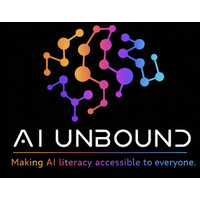
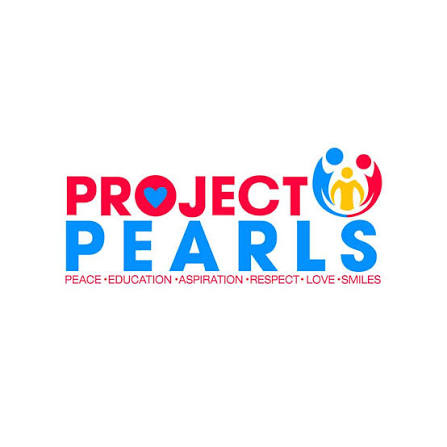

01
Understand AI
What AI is, what it can do, where it struggles and why outputs can be unreliable.

AI UNBOUNDA student-led AI literacy initiative helping young people understand how AI works, use it effectively, question its outputs and keep human thinking at the centre.
AI Unbound is a student-led initiative focused on making artificial intelligence practical, understandable and accessible to young people.
The programme teaches students how AI works at a useful level, how to prompt effectively, how to learn with AI without outsourcing their thinking, and how to recognise unreliable outputs.
AI should be understood as a tool, not treated as a replacement for human thinking.
What AI is, what it can do, where it struggles and why outputs can be unreliable.
Use clear instructions, useful context and specific objectives to communicate with AI.
Use AI as a learning partner for explanations, practice, brainstorming and feedback.
Question outputs, verify information and keep human judgment in the loop.
Scroll through the programme →
What AI is, generative and multimodal AI, hallucinations, limitations and responsible use.
AI suggests. Humans decide.Prompt fundamentals, context, objectives, instructions and communicating clearly with AI.
Move from basic prompts to structured workflows, iteration and better outputs.
Ask better questions, practise concepts, brainstorm and get feedback while keeping the student thinking.
Hallucinations, source checking, verification and recognising when an answer needs a second look.
Use AI for everyday workflows, research, organisation and creative problem-solving.
Privacy, bias, attribution, responsible use and the human decisions behind AI-assisted work.
Bring everything together through a practical challenge that asks students to use, question and explain AI.
Demonstrations, activities, practical experimentation, discussion, real-world examples and interactive challenges keep the programme grounded in how students actually use technology.

The programme brings AI literacy sessions to children with limited prior exposure to digital and AI technologies. It introduces AI from the ground up through accessible, practical and interactive learning.

Leadership & advisory
Mohammad is the Founder & CEO of AI Unbound, a student-led initiative focused on making artificial intelligence practical, understandable and accessible to young people.
Based in Dubai, he is a Grade 8 student interested in AI, technology, entrepreneurship and leadership. Through AI Unbound, he has led AI literacy initiatives reaching 250+ students across the UAE.
He is also the Founder & Creator of FoundersPath, an interactive entrepreneurship platform used by 600+ people, and the Editor-in-Chief of Pathfinder, a student-led publication exploring entrepreneurship and innovation.
Dhairya Desai is the Founder & CEO of DEZAI Technologies, a UAE-based enterprise product engineering company and talent incubator focused on software, AI, product engineering and student talent development.
Through DEZAI, he works across AI engineering, product development, mentorship, hackathons and technology-led education initiatives. As an advisor to AI Unbound, Dhairya supports its technology, product, entrepreneurship and partnership direction.
Schools, organisations, educators, partners and students can use this form to reach the AI Unbound team.